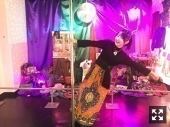
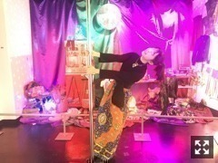
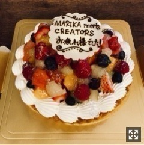

| 2017/12 08 Fri | 伊藤万理華 SUNNY AND BLUE。788回目 |
GALLERY X BY PARCO
KYOTO NIPPON FESTIVAL
FUKUOKA PARCO
にて開催していた
『伊藤万理華の脳内博覧会』
3日をもって閉幕いたしました。
展示した作品ひとつひとつ、
乃木坂46の活動を通して出会った
クリエイターの方々の協力があって
脳内博覧会はつくられました。
宝物です。
脳内を外にぶちまけた瞬間、
空っぽになった気がしたけど
展示されてる僅かの期間でも
発見したことがたくさんありました。
どう受け取るかはそれぞれです。
直接目に触れる、同じ空間にいることで
物の印象も伝わり方も変わる気がします。
3都市、それぞれで受けた印象も
また違ったりしたのかな？
すごく幸せな時間だったな。
ご来場くださった皆様
ありがとうございました！
少しでも楽しんでいただけたなら幸いです。


「トイ」「はじまりか、」
1月10日リリースのアンダーアルバムに
収録されるそう！
PARCO limited storeにて
伊藤万理華の脳内博覧会の物
限定発売決定致しました！
12月9日正午～22日正午までだよーーー
来られなかった人にはグッズだけでも
手にとってほしい。
発売中のMdN、
トイが表紙になってます。
SUNNY AND BLUEという
付録ブックレット付いてます。
私の6年間をすごく贅沢に
かっこよくしてもらってる、
映像と個展のまとめ本です。
あのMdNさんから自分の付録が
出るなんて信じられないのよ、、
読んだけど、これが世に出てるのかと
思うと変な気持ちです。
よかったらみなさんも読んでください
そして、2年半続いた連載
MARIKA meets CREATORSは
30回目を迎え、ついに最終回です、、
ついに、、
最後のお相手は、映像監督の湯浅弘章さん！
辛い時、必ず湯浅さんの作品が
あった気がします。
グループの1人のメンバーとして
目を逸らさずに、真摯に向き合えたのは
湯浅監督の作品があったからだなあ
と思う、
最後に一緒に振り返れてよかった。
思えば、連載が始まって今日まで
編集長の本信さんに
何度も助けられました。
答えをポンと出してくれた時に
素直に受け入れることができたのは
本信さんだからだなあと思う。
お世話になりました。

連載終了は寂しい気もしますが、
私にとっちゃ
2年半続いたことが奇跡です！！！！！
拙いインタビュアーでしたが、
どうだったんでしょうか、、
つくる人ってかっこいい。
本当にありがとうございました。
1st写真集、香港に行きました。
撮影は乃木坂派以来4年ぶりの
大江麻貴さん。
本日発売の
乃木坂46×週刊プレイボーイ2017
裏表紙にも中ページにも
写真集の一部が掲載されています。
集英社インターナショナルさんから
2018年2月20日発売予定。
@nounaihakurankai
伊藤万理華の脳内博覧会→1st写真集official
情報は引き続き、こちらに更新します。
脳内博覧会に加えて
MdNブックレットと写真集。
また宝物が増えた気持ちです。
興味があれば！！！！、！、見てほしいです！
まりか